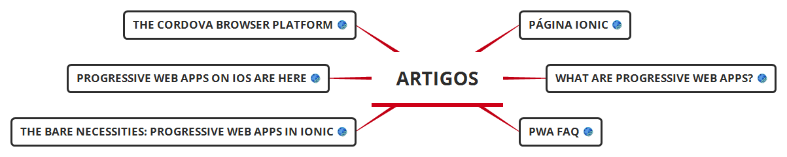
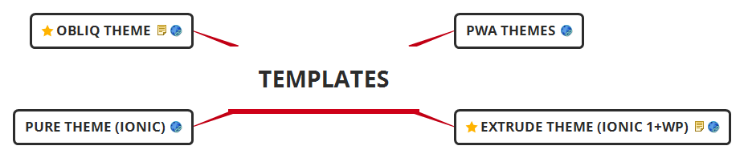
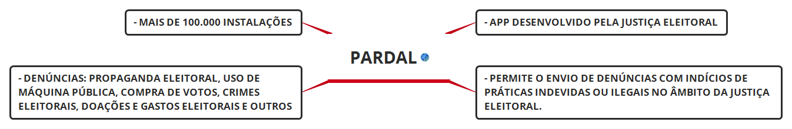
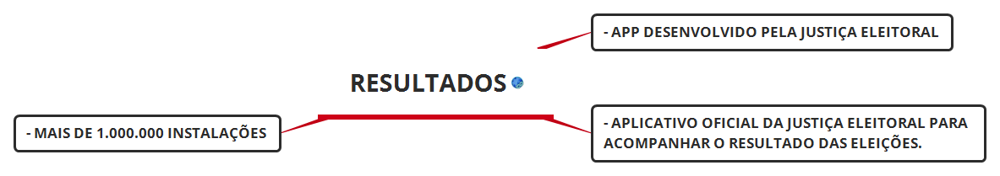
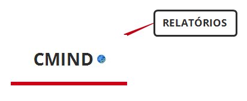
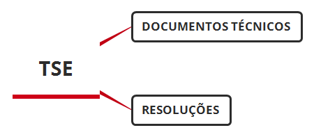

Eleições 2018 APCF - OAB
Problemas em Potencial
1 - Substituição de software em urnas
2 - Fraude dos Mesários
3 - Totalização de votos em Boletins de Urna (transmissão e apuração)
Proposta de Aplicativo
1 - Objetivos: ... fiscalizar por amostragem os boletins de urna ... auxiliar o trabalho de fiscais partidários na verificação de integridade de software embarcado em urnas eletrônicas
2 - Perfis de uso: ... Eleitor ... Fiscal autorizado (Res. 23.550)
3 - Funcionamento: ... Aplicativo é instalado em smartphone de usuário e obtém permissões necessárias para acessar câmera, GPS e Internet ... Durante o período de carga das urnas (por volta de uma semana antes das eleições), fiscais autorizados (Res. 23.550 - vide abaixo) podem usar função que lista resumos digitais esperados em urnas eletrônicas, verificação esta realizada nas dependências da Justiça Eleitoral. Se requerida e deferida por autoridade competente, esta verificação poderá ser feita após a votação. ... Às 17h do dia da eleição, qualquer usuário comparece às seções eleitorais de interesse e digitaliza boletins de urna recém-impressos por presidentes. Durante o processo de digitalização (ou em um instante posterior, caso haja indisponibilidade de conexão à internet), aplicativo envia boletim de urna para servidor, onde dados são armazenados e processados.
4 - Requisitos: ... Plataformas Android e iOS ... Uso offline (leitura de QRCode) e online (transmissão, resultados...)
5 - Arquitetura e Tecnologia
ionic + Cordova (frontend)
Scanner QR Code
Módulo QR Scanner
Tutorial QR Scanner ionic 3 Angular 4
Código fonte de exemplo
Template aplicativo
15 Ready-Made Ionic 3 App Templates
Template Ionic 3 App
Template Ionic 3 Blue Light
Template Ionium 2
Template Ionic 3 Toolkit
Template Firetask
Top 10 Free Ionic 3 Templates
Ionic Themes - Ion2FullApp ELITE
Projetos Github
daniwidodo / Ionic-3-Wordpress-REST-Client
daniwidodo / Ionic-4-Wordpress-REST
codyburleson / ionic-ng-wp-client
angular-studio / ionic-wordpress
ionicthemes / ionic3-wordpress-integration
wordpress-clients / hybrid
Outros
ionic PWA (frontend alternativo)
Artigos

Página ionic
What are Progressive Web Apps?
PWA FAQ
The Bare Necessities: Progressive Web Apps in Ionic
Progressive Web Apps on iOS are here
The Cordova browser platform
Projetos Github
doppelganger9 / sample-qrcode-pwa-ionic
bitpay / cordova-plugin-qrscanner
code-kotis / barcode-scanner
Templates

PWA Themes
EXTRUDE Theme (ionic 1+WP)
PURE Theme (ionic)
OBLIQ Theme
Firebase (backend)
Plano Spark (gratuito) ou Flame (US$ 25/mês)
API REST para acesso a dados
Maioria dos templates funciona com Firebase
Wordpress (notícias)
Template site
Template Appdev - Mobile App Showcase WordPress Theme
Template App on - Responsive App Landing WordPress Theme
Template StabApp - Mobile App Showcase Wordpress Theme
Wordpress Edin
Redash (analytics)
Hospedagem em nuvem a partir de US$ 49/mês
Código fonte aberto
JSON como fonte de dados
Soluções Existentes
Totalização Paralela das Eleições 2018
- App desenvolvido por membro do CMIND
- Objetivo: fiscalizar por amostragem o resultado em urnas cujos boletins foram digitalizados (só poderá ser feito após 72h com a divulgação oficial de resultados seções pelo TSE)
- Auxilia a fiscalização apenas na etapa de transmissão e totalização dos BU
- Permite ler Boletim de Urna impresso em QR Code e enviar para posterior análise e totalização
- Entre 5.000 e 10.000 instalações, apenas 4 usos de teste em 24/09/2018 (Curitiba/PR, Maceió/AL, Pirenópolis/GO e Belo Horizonte/MG - eu)
- Uso simples, interface espartana
Boletim na Mão
- App desenvolvido pela Justiça Eleitoral
- Permite leitura da imagem (QRcode) contida no final do boletim impresso pela urna da seção eleitoral, possibilitando ao eleitor obter e visualizar uma cópia digital dos boletins de urna em seu celular ou tablet
- Entre 100 e 500 instalações
Pardal

- App desenvolvido pela Justiça Eleitoral
- Permite o envio de denúncias com indícios de práticas indevidas ou ilegais no âmbito da Justiça Eleitoral.
- Denúncias: Propaganda Eleitoral, Uso de Máquina Pública, Compra de Votos, Crimes Eleitorais, Doações e Gastos Eleitorais e Outros
- Mais de 100.000 instalações
Resultados

- App desenvolvido pela Justiça Eleitoral
- Aplicativo oficial da Justiça Eleitoral para acompanhar o resultado das eleições.
- Mais de 1.000.000 instalações
Recursos Auxiliares
CMIND

Relatórios
- 1º Relatório CMind sobre o Sistema Brasileiro de Votação Eletrônica - 2010
- 2º Relatório CMind sobre o Equipamento Argentino de Votação usado em 2011
- 3º Relatório CMind sobre Eleição Eletrônica no Equador em 2014
TSE

Documentos Técnicos
- QR Code no Boletim de Urna: manual para criação de aplicativos de leitura
- Resumos digitais (hashes) das Eleições 2018 – 1º e 2º turnos
Resoluções
RESOLUÇÃO Nº 23.554, DE 18 DE DEZEMBRO DE 2017
- Dispõe sobre os atos preparatórios para as Eleições 2018.
- Em seu Art. 180, trata do conteúdo e da impressão de boletins de urna
RESOLUÇÃO Nº 23.550, DE 18 DE DEZEMBRO DE 2017
- Dispõe sobre a cerimônia de assinatura digital e fiscalização do sistema eletrônico de votação, do registro digital do voto, das auditorias de funcionamento das urnas eletrônicas e dos procedimentos de segurança dos dados dos sistemas eleitorais.
- Em seu Art. 1º diz que é garantido aos partidos políticos e coligações, à OAB, à PF e a inúmeros outros atores o acesso antecipado aos programas de computados desenvolvidos pelo TSE para fins de fiscalização e auditoria em eleições.
- Em seu Art. 32, trata das verificações de resumos digitais (hash) de aplicativos usados na votação eletrônica. A Verificação Pré-Pós Eleição (VPP) permite checar os sistemas instalados na urna eletrônica, enquanto o Verificador de Autenticação de Programas (VAP) serve para conferir os sistemas instalados em microcomputadores.
- Em seus Art. 35 e 36, trata dos períodos e momentos em que a verificação da assinatura digital e dos resumos digitais (hash) poderá ser realizada.
Artigos Científicos e Relatórios
- (In)segurança do voto eletrônico no Brasil / Vulnerabilidades no software da urna eletrônica brasileira
13775-1442-5-30.pdf
- Relatório de Auditoria Especial no Sistema Eleitoral 2014 - PSDB
RelatorioAuditoriaEleicao2014-PSDB.pdf
Notícias
- Fórum do Voto Eletrônico


.jpg)


.jpg)

.jpg)
.jpg)

.jpg)


seguran%C3%A7a do voto eletr%C3%B4nico no Brasil Vulnerabilidades no software da urna eletr%C3%B4nica brasileira.jpg)